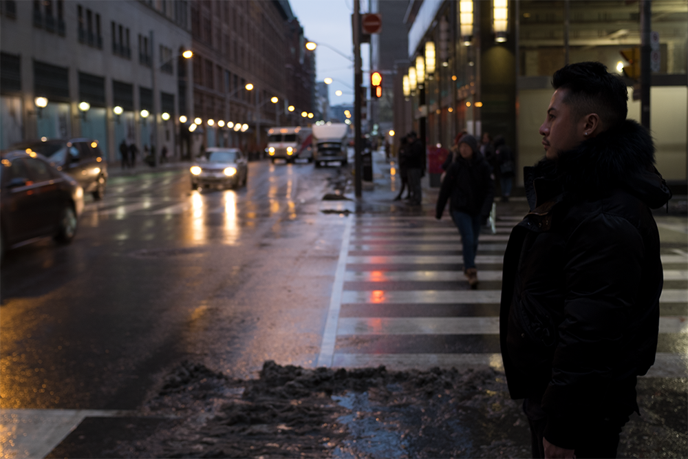
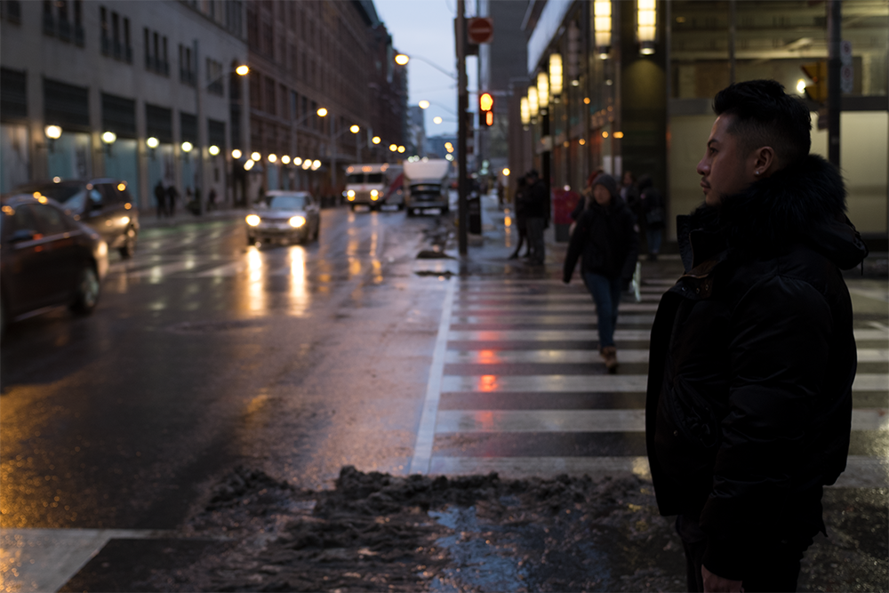

In the quiet moments before dawn, where the city’s heartbeat echoes through empty streets, Frederic Franci captures fleeting stories with the timeless lens of black and white film. His photography is not just an art, but a process — a deliberate dance between light and shadow, where every click of the shutter whispers of humanity’s raw and unfiltered essence. Frederic roams the streets, seeking those in-between moments, where the mundane becomes poetic. His work delves into the textures of urban life — cracked sidewalks, glistening rain-soaked pavements, and the silent gaze of a passerby caught in thought. Every photograph is a study of contrast, an interplay of bold blacks and gentle whites, telling stories in their purest form. What makes Frederic’s work truly distinct is not just the images he captures, but the way they are born. Each print is crafted by hand in the darkroom, a space where Frederic surrenders to the alchemy of light and chemicals. Here, under the faint glow of a red lamp, film is transformed into art, one image at a time — tangible, imperfect, and deeply personal. With each photograph, Frederic invites you into his world, a world where the city is a canvas, life is a subject, and black and white film becomes a bridge between past and present.
 

This photographer is driven by more than the pursuit of aesthetic beauty. He seeks to immortalize those brief flashes of time where light, movement, and emotion align perfectly. For him, photography is not just about creating images but preserving the unspoken stories found in everyday life, on the streets, in fleeting glances, and hidden corners. His goal is simple yet profound: to make people feel, think, and reflect.